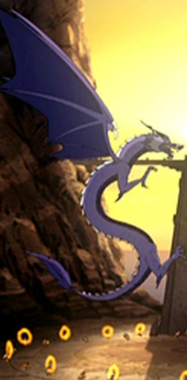
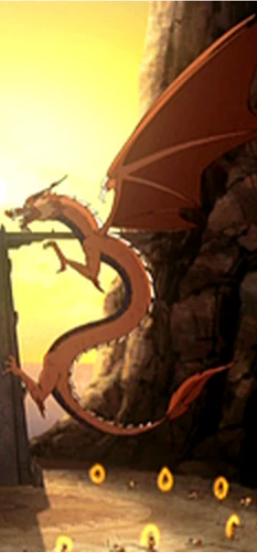

|  |
What is firebending?Fire Bending is one of the four elemental bending arts with the pyrokinetic ability to produce and control fire. Fire is the element of power, the people of the Fire Nation have the desire, will, and energy to achieve what they want. Fire bending is unique from the other elements as it’s the only element in which the performer can generate the element. The first fire benders derived their energy from the dragons. Alternative styles of fire bending:
Source of firebendingFire benders draw power from the sun. Fire benders use their internal body heat as the source of their bending. However, during the Hundred Year War, a militaristic fire Nation fueled their bending by anger and rage instead of from the dragons. Return to the main page or the return to the top of the page. HTML Validator |
 |